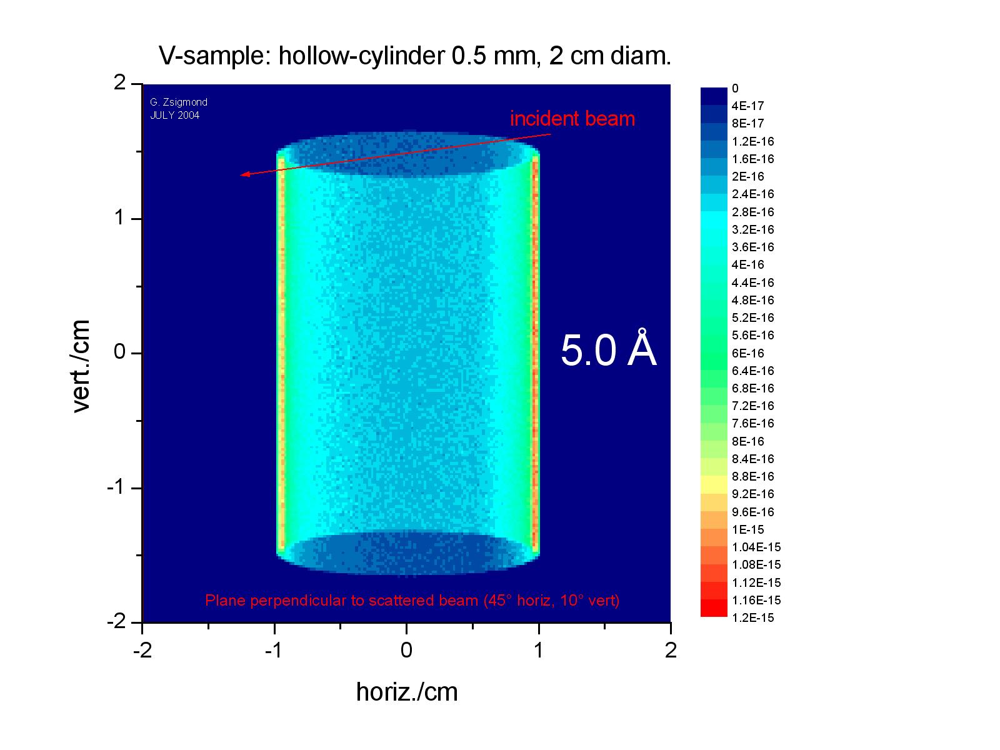

The probability weight P provided by the former module is multiplied by the factors:
P' = (sr) x pathlength x attenuation x (solid angle/4p) x P,
where (sr) is the scattering coefficient [cm-1] i.e. scattering cross section multiplied with density. Attenuation means two wavelength and path length dependent exponential factors before and after the scattering: exp(-(s + sabsorbtion)r x pathlength), where is sabsorbtion ~ l, and the usual tabular value for 1.8 Angstrom has to be converted to 1 Angstrom and used in order to calculate the input value absorption coefficient. The (sr) scattering coefficient [cm-1] contributes to the attenuation ('self-shielding').
The sample structure is considered as homogeneous and absorbent. The geometrical parameters of the sample are: position, horizontal and vertical offset angles with reference to the final coordinate system of the antecedent module, and size of the sample.
Detailed parameter definitions can be read from the tables in section A.
In the output frame X'Y'Z', all neutron coordinates are referring to the moment when the neutrons are just crossing the sample walls after the scattering . Multiple scattering is not yet included. The effect of sample size and geometry on the scattered intensity can be calculated by calibration taking into account that I / I' = V/V' (V - illuminated sample volume).
- MAIN PARAMETERS
| File | Format | Examples Attached |
| Parameter File | Includes FILE INPUT PARAMETERS. This file can be read or created/modified by the VITESS shell. | sampleelastizotr_default.iso |
| Parameter | Physical Symbol, Description | Range, Examples |
| repetition
[-] |
If this integer > 1, the neutron trajectory is used multiple times to obtain better statistics. | >= 1 |
- FILE INPUT PARAMETERS
| Parameter | Description | Range, Examples |
| angle horiz/vert final [deg] |
horizontal and vertical components of the main scattering angle | -180° - 180° |
| delta angle horiz/vert [deg] |
angular intervals around the horizontal and vertical components of the main scattering angle | 0° - 180° |
| absorption coefficient
[1/cm/ Å] |
Attenuation constant per unit wavelength (corresponding to 1 Angstrom) which is 1/ (density * absorbtion cross section). | > 0. |
| scattering coefficient [1/cm] |
1/ (density * scattering cross section) | from tables |
| position
[cm] |
Position of sample center in the frame provided by the former module. | e.g. 10.0, 0.0, 0.0 |
| thickness, height,
width
[cm] |
Thickness, height and width give dimensions of a cuboid sample. For cylinder only diamter and height are relevant parameters. For hollow cylinder, inner diameter is given by the third parameter.For spherical samples only the first value is considered as radius. | e.g. cylinder: 1.0, 6.0 |
| offset angle horizontal,
vertical [deg] |
A rotation first around the Z axis and then around the (new)Y axis gives the orientation of the sample. It has no relevance for a spherical sample geometry. | e.g. 0.0, 0.0 |
| output angle horizontal,
vertical [deg] |
A rotation about the Z axis and then a rotation about the (new)Y axis defines a new orientation for the neutrons written to the output. | e.g. forward scattering:
0.0, 0.0 |
| output frame
X',Y',Z' [cm] |
The position of the output frame origin in the original frame. It represents the translation vector applied to shift the origin of the original (input) frame to the new (output) position. | one point on the scattered beam axis |
Example for hollow cylinder V sample:

Last modified: Wed Jul 22 2004, G. Zsigmond